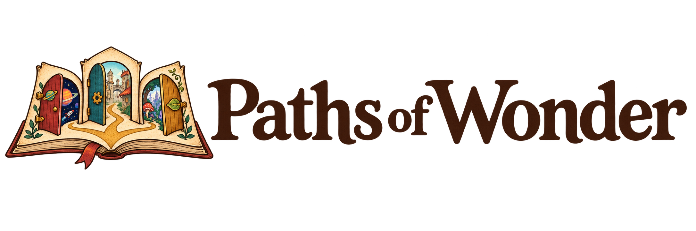
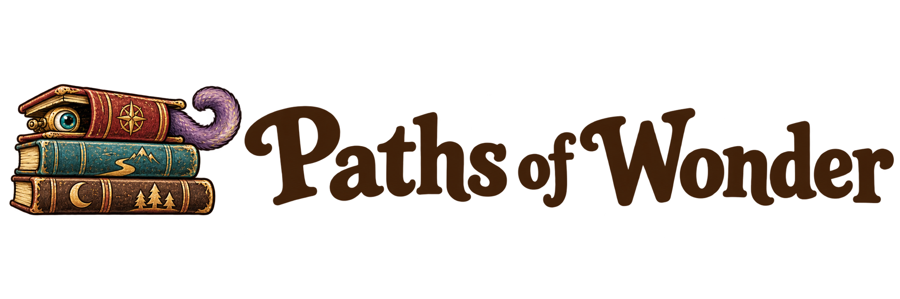
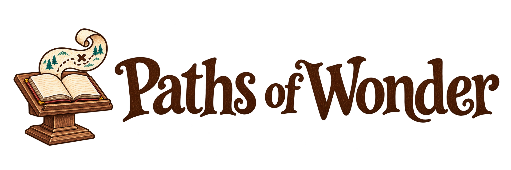

01 · Storybook
A calm literary serif with the doorway book.

Header size
Paths of Wonder · Wordmark exploration
Three directions with the image at the front. Each is shown large and at a 320-pixel header size. These are review options; the illustrations are already being placed in the site content.
A calm literary serif with the doorway book.

Rounder, bolder lettering with the peeking eye.

Lively chapter-heading lettering with the podium and map.

Keep the complete illustrated logos for marketing, and use the separate artwork throughout the site. Saved generation prompts.